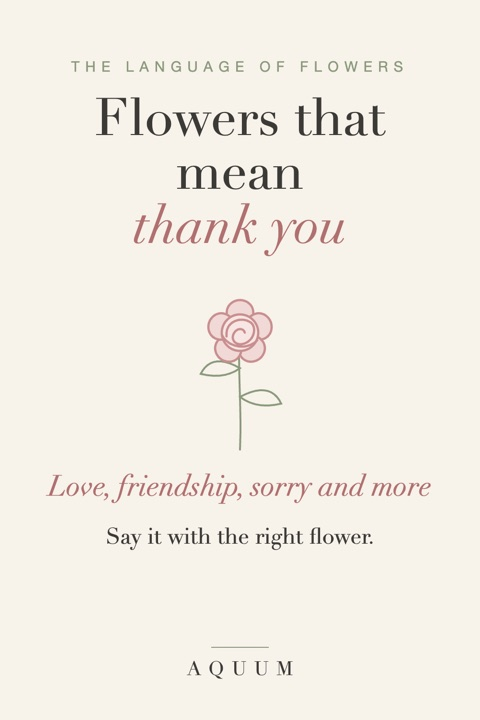

Flowers That Mean Thank You, Love, Friendship and Sorry
2026-10-03
Written by the team behind Aquum, a small birth flower gift shop. How we make money.

Most flower guides go from the flower to the meaning. This one goes the other way: start with what you want to say, and find the flowers that say it. The meanings come from the language of flowers (floriography), the code the Victorians used to send messages in bouquets, and from older traditions that fed into it.
A tip before you choose: a flower that is also the person's birth flower carries twice the meaning. If their flower happens to match your message, use it. If not, you can pair the two. The birth flower finder tells you theirs from a birthday.
Flowers that mean thank you
- Sweet pea: in Victorian times, a bunch of sweet peas said "thank you for a lovely time". It's April's second birth flower. See the sweet pea guide.
- Pink rose: gratitude and admiration. Lighter pinks lean toward gentle thanks, deeper pinks toward appreciation.
- Hydrangea: heartfelt gratitude and understanding, often given to say "thank you for being there".
- Pink carnation: gratitude, and in many places a classic for mothers. January's birth flower is the carnation.
Good for: teachers, nurses, hosts, a friend who helped you move. Pair with a thank-you card that says "Thankful for you".
Flowers that mean love
- Red rose: the clearest "I love you" there is. June's birth flower is the rose, and its colors each say something different.
- Red tulip: a declaration of love, a little less formal than a rose.
- Forget-me-not: true love and remembrance, for a love that's been there a long time.
- Honeysuckle: devoted affection, the bond of two people. It's June's second birth flower.
Good for: anniversaries and Valentine's Day. See anniversary gifts and Valentine's Day gifts.
Flowers that mean friendship
- Yellow rose: friendship and joy, without the romance of red.
- Chrysanthemum: honest friendship and good fortune; November's birth flower.
- Ivy: fidelity and a friendship that holds on.
- Larkspur: an open heart and a strong bond; July's birth flower.
Good for: best friends, sisters, old friends. More ideas in our gifts for best friends.
Flowers that mean I'm sorry
- Purple hyacinth: "I'm sorry, please forgive me". In Greek myth the hyacinth grew from the blood of Hyacinthus, and the flower has carried regret ever since.
- White tulip: forgiveness and a fresh start.
- White rose: a new beginning and sincerity.
A small bouquet and a short, honest note works better than a big gesture.
Flowers that mean congratulations and new beginnings
- Daffodil: new beginnings; March's birth flower. Perfect for a new job, a new home or a new baby.
- Sunflower: adoration and loyalty, and pure cheer. More in fall flowers and their meanings.
- Daisy: innocence and uncomplicated joy; April's birth flower, lovely for a new baby.
- Jonquil: a wish for affection returned; March's second flower.
Flowers for sympathy and remembrance
- White lily: peace and the restored innocence of the soul; the most traditional funeral flower.
- Poppy: remembrance, especially of those lost in war; August's second birth flower.
- Forget-me-not: "I will remember you".
- Marigold: in Mexico, the flower that guides the dead home on the Day of the Dead; October's birth flower.
For someone grieving, the person's own birth flower can be the most personal choice of all.
Flowers that mean hope
- Snowdrop: the first flower through the snow, and January's second flower.
- Hawthorn: hope and the coming of spring; May's second flower.
- Christmas rose: hope and serenity in hard times. See Christmas flowers and their meanings.
At a glance
| You want to say | Flowers |
|---|---|
| Thank you | Sweet pea, pink rose, hydrangea, pink carnation |
| I love you | Red rose, red tulip, forget-me-not, honeysuckle |
| You're my friend | Yellow rose, chrysanthemum, ivy, larkspur |
| I'm sorry | Purple hyacinth, white tulip, white rose |
| Congratulations | Daffodil, sunflower, daisy, jonquil |
| I remember | White lily, poppy, forget-me-not, marigold |
| Don't lose hope | Snowdrop, hawthorn, Christmas rose |
Want to look up a flower instead? Here are flower meanings from A to Z.
Writing the card? Here is what to write in a thank you card for every occasion.